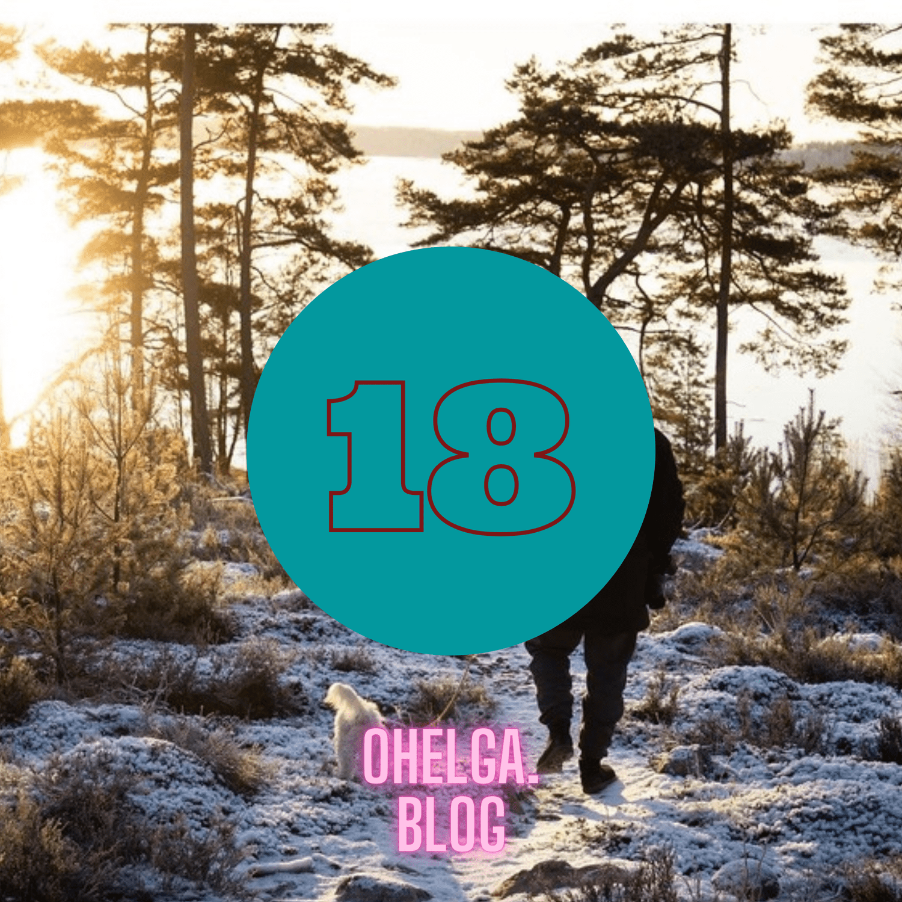

Här drillas det som en fågel en sommarmorgon. Johanna ostaa, Tomi ei välttämättä ihan. Men tonen - hur går det med denna omtalade versions ton?
Apple Music:
Spotify:

Här drillas det som en fågel en sommarmorgon. Johanna ostaa, Tomi ei välttämättä ihan. Men tonen - hur går det med denna omtalade versions ton?
Apple Music:
Spotify:

Kommentit / Kommentarer (3)
<p>Ni har väl inte valt den bästa versionen han har nämligen gjort åtminstone en som är bättre. Detta är min absoluta favorit. Han var ju verksam i London under lång tid och en av de stora tidningarna där skrev då att han äger en av de bästa rösterna i världen. Jag är beredd att hålla med. Jag ger honom en stark tia och om ni söker en segrare kan ni sluta leta. Jag har inte absolut gehör men har noterat att flera av de andra kandidaterna inte ens sjunger riktigt rent. </p>
<p>Jo jag tycker också att Tommy Körberg är väldigt bra, han är en av Sveriges bästa sångare, om inte den bästa till och med. En riktig guldstrupe, och här var det ju ingen tvekan om att han klarar låtens alla toner galant. Men det är möjligt att det finns ännu bättre tolkningar av denna låt inspelade av honom. Nog nosar detta på en nia. En liten korrigering: Körberg har tävlat i Eurovision hela två gånger, andra gången 1988 med Stad i ljus.</p>
<p>Gillar honom bättre som Mattisrövare. Så mycket darr och sånt. </p>